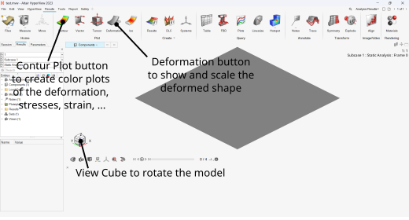

Hyperworks basics#
Finite Element Methode#
From a mathematical perspective, the finite element method is a technique for solving differential equations. To put it more simply: If a structure or component cannot be analyzed “as a whole” under mechanical loading, the structure is broken down into many small “calculable” parts, the finite elements. This makes it possible to analyze the entire structure. Nevertheless, even for a very simple 2- or 3-dimensional element, the continuum mechanics differential equations cannot be solved exactly. Therefore, an approximation is used, whereby the more elements used, the better the solution for the whole structure.
The deformation and thus the load on the elements are generally applied via nodes at the edges of the elements. The individual elements are coupled via these nodes. This transforms the continuum (the structural component), which has an infinite number of degrees of freedom, into a system with a finite number of degrees of freedom (the degrees of freedom of deformation at each node multiplied by the number of nodes).
A finite element analysis is typically divided into three parts:
Preprocessing (modeling the structure using a finite element mesh, along with load and boundary conditions)
Solver (the calculation process)
Post-processing (result evaluation, creation of clear, color-coded visualizations for evaluating stresses, deformations, etc.)
All three parts are included in the HyperWorks package. The pre-processor is HyperMesh, and the post-processor is HyperView. Various programs can be used for the solver. For a linear static calculation, the OptiStruct solver is typically used.
Create a “one element static analysis” input file (preprocessing)#
An optistruct fem-input-file is splittet in three sections: the I/O Options Section the Subcase Information Section and the Bulk Data Section. For a
The I/O Options Section controls the overall running of the analysis. So, for example, a title can be defined:
TITLE = OneElemetLinearModel
The Subcase Information Section specifies the type of analysis and and the load and boundary conditions included in this subcase (the load and boundary conditions are defined in the “Bulk Data” section):
SUBCASE 1
ANALYSIS = Static $static analysis
SPC = 4 $ boundary conditions with id 4
LOAD = 2 $ loads with id 2
Note
The $-symbol is used to add comments. Anything entered on a line after this symbol is ignored by OptiStruct.
In the Bulk Data Sectoin the geometrie (nodes and elements), the load, the boundaries, … are defined.
$
BEGIN BULK $ Initiation of the Bulk date section
$
The following defines a simple single-element geometry in the form of a flat shell (here a 4-node element of the type [CQUAD4](https://help.altair.com/hwsolvers/os/topics/solvers/os/cquad4_bulk_r.htm is used):
$ Definition of the nodes or grid points
$
GRID,1,,0.0,0.0,0.0
GRID,2,,1.0,0.0,0.0
GRID,3,,1.0,1.0,0.0
GRID,4,,0.0,1.0,0.0
$
$ Definition of the shell element including the shell properties defined by PID=9
$
CQUAD4,1,9,1,2,3,4
$
Now the element properties via PSHELL, with the shell thickness (here thickness =1.0) and material definition (here linear elastic, isotropic material MAT1 ) need to be defined:
$
MAT1, 7, 210000, , 0.3 $ definition of a linear elastic material with the MID=7
$
PSHELL, 9, 7, 1.0 $ definition of shell properties with the PID=9
$
At last the Load (here as a notal force FORCE ) and the boundary conditions (via SPC ) are defined. All the loads are included in one load setz via the same Load set identification number (here SID=2 for the force and SID=4 for the boundarys)
$
Force,2,3,,10.,0.0,1.0 $ single force in the direction (0.0,1.0,0.0) with an absolut value of 10.0
Force,2,4,,10.,0.0,1.0
$
SPC,4,1,123 $ fixed constraint on node 1 in 1,2, and 3 direction
SPC,4,2,23
SPC,4,3,3
SPC,4,4,3
$
NOTE
There are several ways to separate the parameters or fields variabels in each bulk entry. One option is to use “,” as a separator; another is to define each field as exactly eight characters long. So, the following two lines define the same input:
SPC,4,1,123
SPC 4 1 123
$12345678123456781234567812345678
Attention: if you just miss one blank in the second line, the field variable might be different!
Starting the calculation (solver)#
The calculation (using the solver OptiStruct) can be startet in different ways: - by clicking the analyse-button after the import of the .fem file in hyperworks via import, import solver deck - by starting the calculation with the command line, for ex. C:”Program Files”\Altair\2021.2\hwsolvers\scripts\optistruct 210610_KerbscheibeKomplett_lin.fem - by using the Compute Console
Showing the results the calculation (postprocessing)#
Once the calculation is complete, the results file (a file with the extension .h3d) can be opened in HyperView (or a Result button will appear somewhere). HyperView offers numerous options for visualizing the results. The first buttons you can experiment with are shown in the following figure:

Exercises: one element static analysis input file#
Create an input file with a single element
Run the file using the OptiStruct solver
Display the results:
Deformation (scale the deformed shape)
Contour plot of deformation in the x and y directions
Contour plot of stresses and strains
Recalculate the stresses and strains “by hand”
Modify the model and note the differences
modify the forces to apply a constant stress of 10 MPa
apply a constant stress even in the y-direction
apply a force only on one node of the model (are the calculated stresses realistic?)
For experts: Build the same body (a plane square) using 4 elements and repeat the last calculation; is the stress distribution now more realistic?